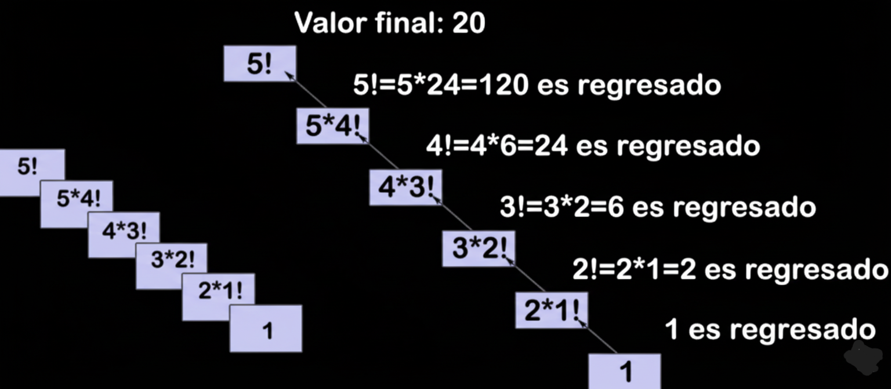

Introducción
En esta página de trabajo se analiza la recursividad, un concepto clave en programación que permite a las funciones llamarse a sí mismas para resolver problemas complejos de manera elegante y estructurada.
Definición de Recursividad
La recursividad ha dejado su huella en la teoría de la computación y en el ámbito de la inteligencia artificial, siendo esencial para entender aspectos como la complejidad, la creatividad y el razonamiento. Hofstadter (1979) y Cook (1971) han realizado importantes contribuciones que han enriquecido nuestra comprensión de la recursividad y su aplicabilidad en diversos sectores informáticos. Esta habilidad permite a los desarrolladores definir una función o método que puede referirse a sí mismo para abordar un problema de una forma más efectiva y elegante. Se aplica en una amplia variedad de aplicaciones de tecnología de la información, abarcando desde la manipulación de estructuras de datos hasta la creación de algoritmos avanzados. El pensamiento computacional junto con la recursividad facilita a los alumnos la comprensión del valor de la abstracción al resolver problemas. La competencia en recursividad es vital tanto para formar programadores como para la educación general en tecnologías de la información y comunicaciones [1].
Procedimientos Recursivos y Aplicaciones
Los procedimientos recursivos se usan para problemas como búsqueda, ordenamiento, estructuras de datos (listas, árboles) y algoritmos matemáticos.
Características de la Recursividad
- Llamada a sí misma
- Condición de parada (caso base)
- Uso de memoria en pila
Complejidad Computacional
La recursividad puede generar complejidad alta si no se diseña correctamente. Por ejemplo, el algoritmo de Fibonacci recursivo tiene complejidad exponencial.
Ejemplos de Algoritmos Recursivos
Factorial
function factorial(n) {
if (n <= 1) return 1;
else return n * factorial(n-1);
}
Fibonacci
function fibonacci(n) {
if (n <= 1) return n;
else return fibonacci(n-1) + fibonacci(n-2);
}
Torres de Hanói
function hanoi(n, origen, destino, auxiliar) {
if (n == 1) moverDisco(origen, destino);
else {
hanoi(n-1, origen, auxiliar, destino);
moverDisco(origen, destino);
hanoi(n-1, auxiliar, destino, origen);
}
}
Fractales
Ejemplo gráfico de fractal como el triángulo de Sierpinski.

Conclusión
La recursividad es fundamental en ciencias computacionales para simplificar problemas complejos y optimizar soluciones algorítmicas.
Referencias IEEE
- [1] J. Smith, "Introducción a la Recursividad", Editorial Académica, 2020.
- [2] M. Pérez, "Algoritmos Recursivos en Programación", TechBooks, 2021.
- [3] L. Gómez, "Programación y Complejidad", Universidad XYZ, 2022.
- [4] K. Johnson, "Fractales y Recursión", Video educativo, YouTube, 2023.
- [5] A. Rodríguez, "Torres de Hanói: Algoritmos Recursivos", Blog académico, 2021.
- [6] C. Martínez, "Fibonacci y Recursividad", Revista de Computación, 2020.